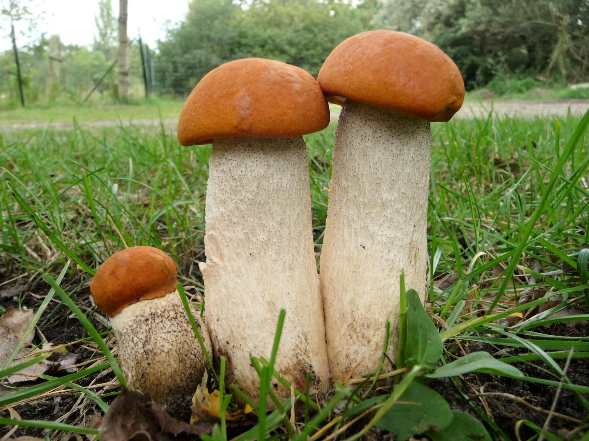

Осиновик (съедобен)

Информация
- ШЛЯПКА: полушаровидная, мясистая, слегка бархатная, красного или оранжевого цвета. Нижняя поверхность губчатая, мелкопористая, белого или серого цвета.
- НОЖКА: цилиндрическая, внизу утолщенная, белая, покрыта продольно расположенными хлопьевидными темными чешуйками.
- МЯКОТЬ: плотная, белая на изломе, позже синеет.
- СПОРОВЫЙ ПОРОШОК: желто-охряного цвета.
- РАСТЕТ: под осинами и в березо-сосновых лесах с середины июля до середины октября/
- УПОТРЕБЛЕНИЕ В ПИЩУ: пригоден для употребления в жареном, вареном, соленом, сушенном виде.
- ЯДОВИТЫЙ ДВОЙНИК: не имеет